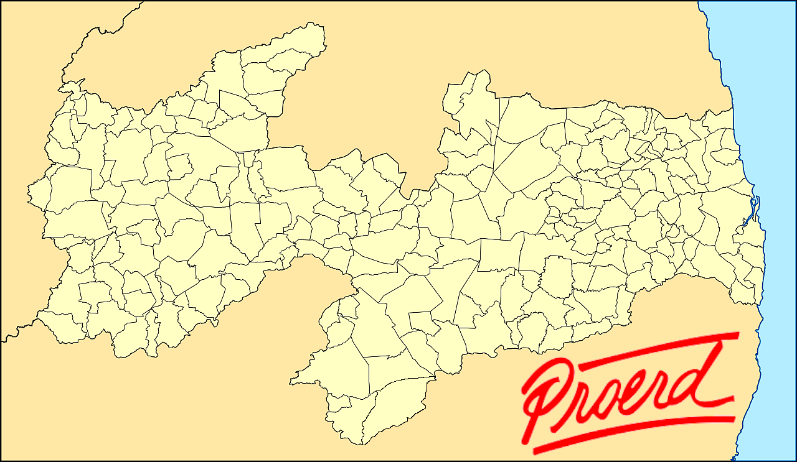

ventos<!DOCTYPE html>
<html lang="pt-BR">
<head>
<meta charset="UTF-8">
<meta name="viewport" content="width=device-width, initial-scale=1.0">
<title>Mapa PROERD - Eventos</title>
<style>
    /* Estilos base */
    body {
        font-family: 'Segoe UI', Tahoma, Geneva, Verdana, sans-serif;
        background: #e9eff5;
        color: #333;
        text-align: center;
        padding: 20px;
        margin: 0;
    }
    h2 {
        color: #004d99;
        margin-bottom: 25px;
        border-bottom: 3px solid #ffcc00;
        display: inline-block;
        padding-bottom: 5px;
    }
    
    /* Container do Mapa */
    #mapaContainer {
        position: relative;
        display: inline-block;
        border: 4px solid #004d99;
        box-shadow: 0 8px 16px rgba(0, 0, 0, 0.2);
        background: #fff;
        overflow: hidden;
        border-radius: 8px;
        max-width: 90%; /* Ajuste para responsividade */
        height: auto;
    }
    #mapa {
        max-width: 100%;
        height: auto;
        display: block;
    }
    
    /* Marcador */
    .marcador {
        position: absolute;
        text-align: center;
        cursor: grab;
        transition: transform 0.1s ease-out;
        user-select: none;
        display: flex;
        flex-direction: column; /* Coloca os itens em coluna */
        align-items: center; /* Centraliza horizontalmente */
        z-index: 10; /* Garante que marcadores fiquem acima do mapa */
    }
    .marcador:active {
        cursor: grabbing;
    }
    
    /* IMAGEM DO MARCADOR: USANDO VARIÁVEL CSS PARA O TAMANHO */
    .marcador img {
        width: var(--icone-tamanho, 50px); 
        height: var(--icone-tamanho, 50px); 
        pointer-events: none;
        filter: drop-shadow(0 2px 3px rgba(0, 0, 0, 0.4));
        margin-top: 2px;
    }
    
    /* Caixa de Texto do Marcador */
    .caixaTexto {
        margin-top: 0; 
        background: rgba(255, 255, 255, 0.95);
        border: 1px solid #004d99;
        border-radius: 4px;
        padding: 6px 8px;
        font-size: 13px;
        font-weight: bold;
        color: #333;
        white-space: nowrap;
        resize: both;
        overflow: auto;
        min-width: 90px;
        min-height: 25px;
        box-shadow: 0 1px 4px rgba(0, 0, 0, 0.1);
        cursor: text;
        z-index: 11; /* Acima do ícone */
    }

    /* Estilo do Marcador Selecionado */
    .selecionado {
        outline: 3px solid #ff0000;
        outline-offset: 2px;
        border-radius: 10px;
        z-index: 1000;
    }

    /* Botões e Controles */
    #controles { /* Renomeado de #botoes para maior clareza */
        margin-top: 20px;
        display: flex;
        flex-wrap: wrap; 
        justify-content: center;
        gap: 15px;
        align-items: center;
        padding: 10px;
        background: #f0f4f8;
        border-radius: 8px;
        box-shadow: 0 2px 8px rgba(0, 0, 0, 0.1);
    }
    button {
        padding: 10px 18px;
        font-size: 16px;
        font-weight: bold;
        cursor: pointer;
        border: none;
        border-radius: 6px;
        transition: background-color 0.3s, transform 0.1s;
        box-shadow: 0 3px 6px rgba(0, 0, 0, 0.15);
    }
    button:hover {
        transform: translateY(-2px);
    }
    button:active {
        transform: translateY(0);
        box-shadow: 0 2px 4px rgba(0, 0, 0, 0.1);
    }

    #adicionar { background-color: #4CAF50; color: white; }
    #remover { background-color: #f44336; color: white; }
    
    #icone-select, #tamanho-icone {
        padding: 8px;
        border-radius: 4px;
        border: 1px solid #ccc;
        font-size: 15px;
        background: #fff;
    }
    #tamanho-icone {
        width: 120px; 
    }

    /* Camada de Dados Flutuante - AGORA NO INFERIOR ESQUERDO */
    #camadaDados {
        position: absolute;
        bottom: 15px; /* Altera top para bottom */
        left: 15px;   /* Altera right para left */
        background: rgba(255, 255, 255, 0.9); 
        border: 1px solid #b0c4de; 
        padding: 12px;
        border-radius: 6px;
        box-shadow: 0 3px 8px rgba(0, 0, 0, 0.15);
        font-size: 14px;
        text-align: left;
        max-width: 200px;
        z-index: 50; 
    }
    #camadaDados h4 {
        margin-top: 0;
        color: #004d99;
        margin-bottom: 10px;
    }
    #camadaDados p {
        margin-bottom: 8px;
    }

    /* Estilo para os campos de dados editáveis */
    .dadoEditavel {
        display: inline-block; 
        min-width: 40px; 
        border: none; 
        border-bottom: 1px dashed #666; 
        padding: 2px 4px;
        cursor: text;
        background-color: transparent; 
        font-size: 14px;
        color: #004d99; 
        font-weight: bold;
        transition: border-bottom 0.2s, background-color 0.2s;
    }
    .dadoEditavel:focus {
        outline: none;
        border-bottom: 1px solid #007bff; 
        background: #e6f2ff; 
    }

    /* Responsividade básica */
    @media (max-width: 768px) {
        #mapaContainer {
            max-width: 98%;
        }
        #camadaDados {
            bottom: 10px; /* Ajuste para telas menores */
            left: 10px;   /* Ajuste para telas menores */
            padding: 8px;
            font-size: 12px;
            max-width: 150px;
        }
        #controles {
            flex-direction: column;
            gap: 10px;
        }
        button, #icone-select, #tamanho-icone {
            width: 80%; 
        }
    }

</style>
</head>
<body>
    <h2>PROERD na PARAÍBA</h2>
    
<div id="mapaContainer">
    
    
    <div id="camadaDados">
        <h4>Estatísticas PROERD-PB</h4>
        <p>
            <strong>Municípios Atendidos:</strong> 
            <input type="text" id="countMunicipios" value="0" class="dadoEditavel">
        </p>
        <p>
            <strong>Público Atendido:</strong> 
            <input type="text" id="countAlunos" value="15.000+" class="dadoEditavel">
        </p>
    </div>
</div>
    
    <div id="controles">
        <label for="icone-select">Ícone:</label>
        <select id="icone-select">
            <option value="2.png">🦁 TIPO 1</option>
            <option value="3.png">⭐ TIPO 2</option>
            <option value="4.png">🏠 TIPO 3</option>
        </select>
        
        <label for="tamanho-icone">Tamanho:</label>
        <input type="range" id="tamanho-icone" min="20" max="100" value="50" oninput="ajustarTamanhoMarcador()">
        <span id="valor-tamanho">50px</span>

        <button id="adicionar" onclick="adicionarMarcador()">➕ Adicionar Marcador</button>
        <button id="remover" onclick="removerMarcador()">🗑️ Remover Selecionado</button>
    </div>

    <script>
        const mapaContainer = document.getElementById("mapaContainer");
        let marcadorSelecionado = null;
        
        const iconeSelect = document.getElementById("icone-select");
        const tamanhoIconeInput = document.getElementById("tamanho-icone");
        const valorTamanhoSpan = document.getElementById("valor-tamanho");

        valorTamanhoSpan.innerText = tamanhoIconeInput.value + 'px';

        function adicionarMarcador() {
            const countMarcadores = document.querySelectorAll('.marcador').length + 1;

            const marcador = document.createElement("div");
            marcador.className = "marcador";
            
            marcador.style.setProperty('--icone-tamanho', tamanhoIconeInput.value + 'px'); 
            
            const mapRect = mapaContainer.getBoundingClientRect();
            marcador.style.left = (mapaContainer.scrollLeft + (mapRect.width / 2) - 25) + "px"; 
            marcador.style.top = (mapaContainer.scrollTop + (mapRect.height / 2) - 25) + "px";

            const img = document.createElement("img");
            img.src = iconeSelect.value;

            const txt = document.createElement("div");
            txt.className = "caixaTexto";
            txt.contentEditable = "true";
            txt.innerText = "Cidade / Regional " + countMarcadores; 

            marcador.setAttribute('data-icon', img.src);
            marcador.setAttribute('data-size', tamanhoIconeInput.value); 
            
            marcador.appendChild(txt);
            marcador.appendChild(img);
            
            mapaContainer.appendChild(marcador);

            dragElement(marcador);

            marcador.addEventListener('click', function(e) {
                if (e.target.classList.contains("caixaTexto")) return;
                e.stopPropagation(); 
                selecionarMarcador(marcador);
            });

            txt.addEventListener('focus', function() {
                selecionarMarcador(marcador);
            });

            selecionarMarcador(marcador);
        }

        function selecionarMarcador(marcador) {
            if (marcadorSelecionado && marcadorSelecionado !== marcador) {
                marcadorSelecionado.classList.remove("selecionado");
            }
            marcadorSelecionado = marcador;
            marcadorSelecionado.classList.add("selecionado");

            iconeSelect.value = marcador.getAttribute('data-icon') || '2.png';
            const currentSize = marcador.getAttribute('data-size') || 50; 
            tamanhoIconeInput.value = currentSize;
            valorTamanhoSpan.innerText = currentSize + 'px';
        }

        function ajustarTamanhoMarcador() {
            const novoTamanho = tamanhoIconeInput.value;
            valorTamanhoSpan.innerText = novoTamanho + 'px';

            if (marcadorSelecionado) {
                marcadorSelecionado.style.setProperty('--icone-tamanho', novoTamanho + 'px'); 
                marcadorSelecionado.setAttribute('data-size', novoTamanho); 
            }
        }

        function removerMarcador() {
            if (marcadorSelecionado) {
                mapaContainer.removeChild(marcadorSelecionado);
                marcadorSelecionado = null;
            } else {
                alert("Nenhum marcador selecionado para remover!");
            }
        }

        function dragElement(elmnt) {
            let pos1 = 0, pos2 = 0, pos3 = 0, pos4 = 0;
            
            elmnt.onmousedown = dragMouseDown;

            function dragMouseDown(e) {
                if (e.target.classList.contains("caixaTexto")) return;
                
                e = e || window.event;
                e.preventDefault();
                
                pos3 = e.clientX;
                pos4 = e.clientY;
                
                document.onmouseup = closeDragElement;
                document.onmousemove = elementDrag;
                
                selecionarMarcador(elmnt);
            }

            function elementDrag(e) {
                e = e || window.event;
                e.preventDefault();
                
                pos1 = pos3 - e.clientX;
                pos2 = pos4 - e.clientY;
                pos3 = e.clientX;
                pos4 = e.clientY;
                
                let newTop = elmnt.offsetTop - pos2;
                let newLeft = elmnt.offsetLeft - pos1;
                
                newTop = Math.max(0, Math.min(newTop, mapaContainer.offsetHeight - elmnt.offsetHeight));
                newLeft = Math.max(0, Math.min(newLeft, mapaContainer.offsetWidth - elmnt.offsetWidth));

                elmnt.style.top = newTop + "px";
                elmnt.style.left = newLeft + "px";
            }

            function closeDragElement() {
                document.onmouseup = null;
                document.onmousemove = null;
            }
        }

        iconeSelect.addEventListener('change', function() {
            if (marcadorSelecionado) {
                const imgElement = marcadorSelecionado.querySelector('img');
                if (imgElement) {
                    imgElement.src = this.value;
                    marcadorSelecionado.setAttribute('data-icon', this.value);
                }
            }
        });

        document.body.addEventListener("click", function(e) {
            if (!e.target.closest('.marcador') && !e.target.closest('.dadoEditavel') && marcadorSelecionado) {
                marcadorSelecionado.classList.remove("selecionado");
                marcadorSelecionado = null;
                tamanhoIconeInput.value = 50;
                valorTamanhoSpan.innerText = '50px';
                iconeSelect.value = '2.png'; 
            }
        });

        mapaContainer.addEventListener('mousedown', function(e) {
            if (e.target.classList.contains('caixaTexto')) {
                e.stopPropagation();
            }
        }, true);
        
    </script>
</body>

</html>
